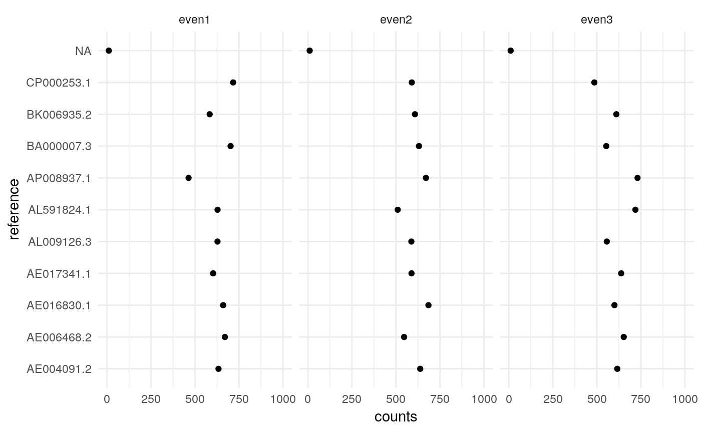
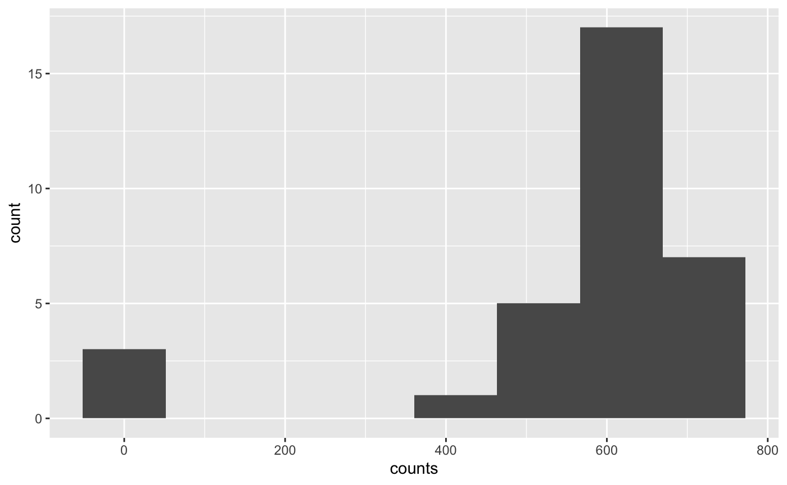
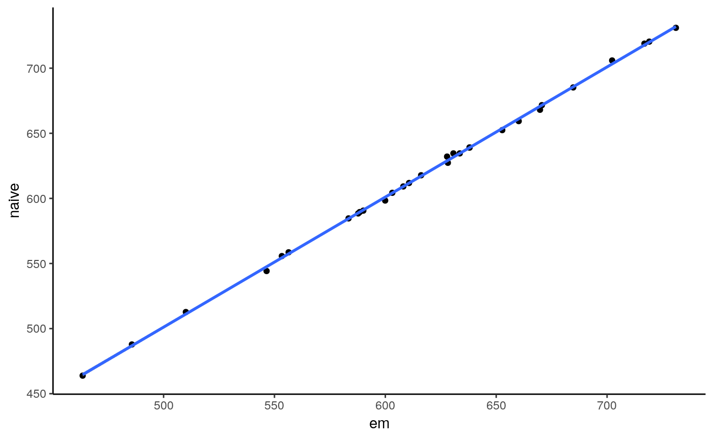

One basic anaylisis we want to perform is to count the abundance of some references in our data. Here reference is a broad term and may refer to transcripts, genomes, or amplicon sequences contained in a reference database.
For this mbtools implements a general purpose expectation maximization (EM) counter. It is implemented in C++ to perform fast and usually reading the alignment file takes longer than the actual analysis.
library(mbtools)## Also loading:## - dada2=1.12.1
## - data.table=1.12.2
## - ggplot2=3.2.1
## - magrittr=1.5
## - phyloseq=1.28.0
## - ShortRead=1.42.0
## - yaml=2.2.0## Found tools:## - minimap2=2.17-r941
## - slimm=0.3.4
## - samtools=1.9##
## Attaching package: 'mbtools'## The following object is masked _by_ 'package:BiocGenerics':
##
## normalizeLet’s start by aligning our short read data to a reference database of 10 microbial genomes.
fi <- system.file("extdata/shotgun", package = "mbtools") %>%
find_read_files()
ref <- system.file("extdata/genomes/zymo_mock.fna.gz",
package = "mbtools")
alns <- align_short_reads(
fi,
threads = 3,
reference = ref,
use_existing = FALSE)## INFO [2019-08-28 13:00:14] Aligning 3 samples on 3 threads. Keeping up to 100 secondary alignments.
## INFO [2019-08-28 13:00:16] Finished aligning even1.
## INFO [2019-08-28 13:00:18] Finished aligning even2.
## INFO [2019-08-28 13:00:20] Finished aligning even3.Counting is yet again a workflow and requires an alignment artifact and a configuration.
config <- config_count(
reference = system.file("extdata/genomes/zymo_mock.fna.gz",
package = "mbtools"),
threads = 1,
weights = TRUE
)
config## $reference
## [1] "/Library/Frameworks/R.framework/Versions/3.6/Resources/library/mbtools/extdata/genomes/zymo_mock.fna.gz"
##
## $threads
## [1] 1
##
## $method
## [1] "em"
##
## $maxit
## [1] 10000
##
## $cutoff
## [1] 0.01
##
## $tpm
## [1] FALSE
##
## $weights
## [1] TRUE
##
## attr(,"class")
## [1] "config"And we can proceed to counting:
cn <- count_references(alns, config)## INFO [2019-08-28 13:00:20] Getting reference lengths from /Library/Frameworks/R.framework/Versions/3.6/Resources/library/mbtools/extdata/genomes/zymo_mock.fna.gz...
## INFO [2019-08-28 13:00:21] Normalized IDs. Starting counting...
## INFO [2019-08-28 13:00:21] [alignments/even1.bam] Read 16941 alignments.
## INFO [2019-08-28 13:00:21] [alignments/even1.bam] 10 reference seqs. Confidence interval for effective lengths: [2261189.10, 17482265.90].
## INFO [2019-08-28 13:00:21] [alignments/even1.bam] Used 20 EM iterations on 16 equivalence classes. Last max. abs. change was 0. Database concordance is 0.16%.
## INFO [2019-08-28 13:00:22] [alignments/even2.bam] Read 16804 alignments.
## INFO [2019-08-28 13:00:22] [alignments/even2.bam] 10 reference seqs. Confidence interval for effective lengths: [2261189.10, 17482265.90].
## INFO [2019-08-28 13:00:22] [alignments/even2.bam] Used 20 EM iterations on 12 equivalence classes. Last max. abs. change was 1.1e-13. Database concordance is 0.17%.
## INFO [2019-08-28 13:00:22] [alignments/even3.bam] Read 17518 alignments.
## INFO [2019-08-28 13:00:22] [alignments/even3.bam] 10 reference seqs. Confidence interval for effective lengths: [2261189.10, 17482265.90].
## INFO [2019-08-28 13:00:22] [alignments/even3.bam] Used 20 EM iterations on 20 equivalence classes. Last max. abs. change was 5.7e-14. Database concordance is 0.16%.This creates a count artifact which contains the counts.
## reference counts effective_length sample
## 1: AE004091.2 633.56663 6264306 even1
## 2: AE006468.2 669.75553 4857352 even1
## 3: AE016830.1 660.15548 3217933 even1
## 4: AE017341.1 603.14526 19052864 even1
## 5: AL009126.3 627.85029 4215508 even1
## 6: AL591824.1 628.19900 2944430 even1
## 7: AP008937.1 463.50018 2098587 even1
## 8: BA000007.3 702.28268 5498480 even1
## 9: BK006935.2 583.40725 12072428 even1
## 10: CP000253.1 716.85064 2821263 even1
## 11: <NA> 10.28706 NA even1
## 12: AE004091.2 637.96080 6264306 even2
## 13: AE006468.2 546.44977 4857352 even2
## 14: AE016830.1 684.74418 3217933 even2
## 15: AE017341.1 588.45327 19052864 even2
## 16: AL009126.3 587.75863 4215508 even2
## 17: AL591824.1 510.03447 2944430 even2
## 18: AP008937.1 670.60417 2098587 even2
## 19: BA000007.3 630.70269 5498480 even2
## 20: BK006935.2 608.11390 12072428 even2
## 21: CP000253.1 590.07601 2821263 even2
## 22: <NA> 10.10210 NA even2
## 23: AE004091.2 616.13757 6264306 even3
## 24: AE006468.2 652.73269 4857352 even3
## 25: AE016830.1 599.92729 3217933 even3
## 26: AE017341.1 638.01323 19052864 even3
## 27: AL009126.3 556.38136 4215508 even3
## 28: AL591824.1 719.03635 2944430 even3
## 29: AP008937.1 731.04321 2098587 even3
## 30: BA000007.3 553.32322 5498480 even3
## 31: BK006935.2 610.70098 12072428 even3
## 32: CP000253.1 485.69589 2821263 even3
## 33: <NA> 10.00820 NA even3
## reference counts effective_length sampleNote that there is a NA reference. This is the number of reads likely coming from a sequence not contained in the reference.
cn$counts[is.na(reference)]## reference counts effective_length sample
## 1: <NA> 10.28706 NA even1
## 2: <NA> 10.10210 NA even2
## 3: <NA> 10.00820 NA even3In each sample we have 10 microbes with the same abundance.
ggplot(cn$counts, aes(x=counts, y=reference)) +
geom_point() + xlim(0, 1000) +
facet_wrap(~ sample) + theme_minimal()
Looks ok, but there is a lot of noise since we have very low depth.

We could also compare that with a naive counting method that just uses the best alignment score. In our case that will perform equally since we have little multi-mapping here.
config$method <- "naive"
cn2 <- count_references(alns, config)## INFO [2019-08-28 13:00:23] Getting reference lengths from /Library/Frameworks/R.framework/Versions/3.6/Resources/library/mbtools/extdata/genomes/zymo_mock.fna.gz...
## INFO [2019-08-28 13:00:23] Normalized IDs. Starting counting...
## INFO [2019-08-28 13:00:23] [alignments/even1.bam] Read 16941 alignments.
## INFO [2019-08-28 13:00:23] [alignments/even1.bam] 10 reference seqs. Confidence interval for effective lengths: [2261189.10, 17482265.90].
## INFO [2019-08-28 13:00:23] [alignments/even2.bam] Read 16804 alignments.
## INFO [2019-08-28 13:00:23] [alignments/even2.bam] 10 reference seqs. Confidence interval for effective lengths: [2261189.10, 17482265.90].
## INFO [2019-08-28 13:00:24] [alignments/even3.bam] Read 17518 alignments.
## INFO [2019-08-28 13:00:24] [alignments/even3.bam] 10 reference seqs. Confidence interval for effective lengths: [2261189.10, 17482265.90].counts <- cn$counts[cn2$counts, on = c("sample", "reference", "effective_length")]
ggplot(counts, aes(x = counts, y = i.counts)) +
geom_point() + geom_smooth(method = "lm") +
labs(x = "em", y = "naive") + theme_classic()
As we see they both give the same results for that simple case.